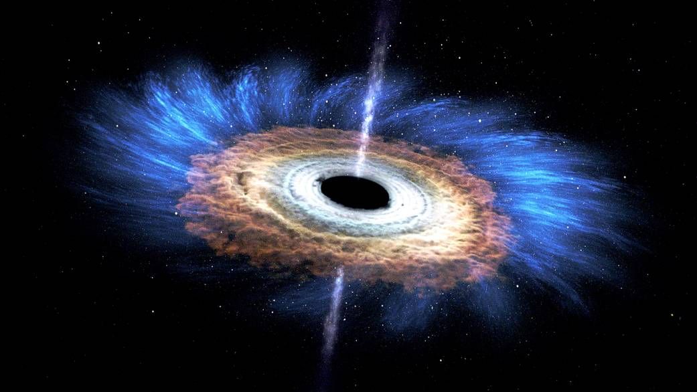

The Swift Gamma-Ray Burst Mission, commonly known as Swift, is a multi-wavelength observatory dedicated to studying gamma-ray bursts (GRBs) – some of the most powerful and mysterious explosions in the universe. Launched in 2004, Swift's primary goal is to determine the origins of GRBs, their aftermath, and their role in the universe's early stages.
Swift is equipped with three main instruments: the Burst Alert Telescope (BAT), which detects GRBs and sends immediate notifications; the X-ray Telescope (XRT), which studies the afterglow produced by these bursts; and the Ultraviolet/Optical Telescope (UVOT), which captures the visible and ultraviolet light from the afterglow. This combination allows Swift to observe GRBs across multiple wavelengths, providing a comprehensive view of these enigmatic events.
Over its operational lifetime, Swift has observed thousands of GRBs, shedding light on their properties, environments, and potential causes. Its observations have also contributed to our understanding of other high-energy phenomena, such as active galactic nuclei and supernovae. Swift's mission, with its relatively modest cost in comparison to other space observatories, has delivered invaluable insights into the high-energy universe, showcasing the power of dedicated missions in advancing astrophysical knowledge.
 Next